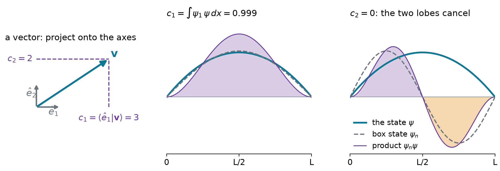
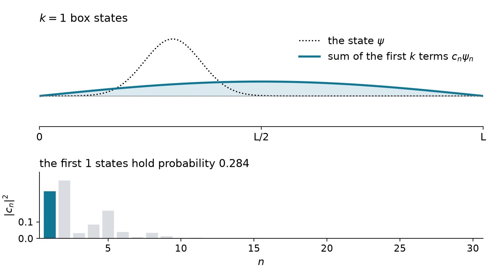
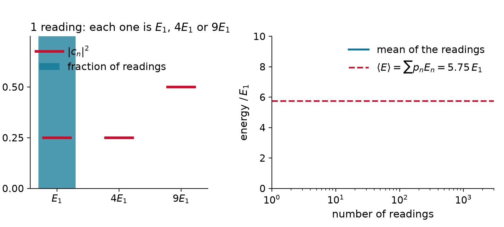
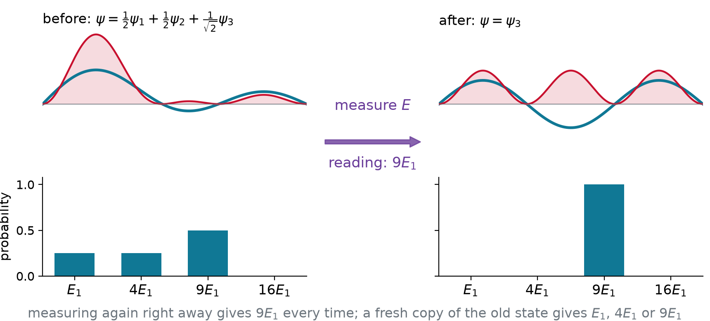
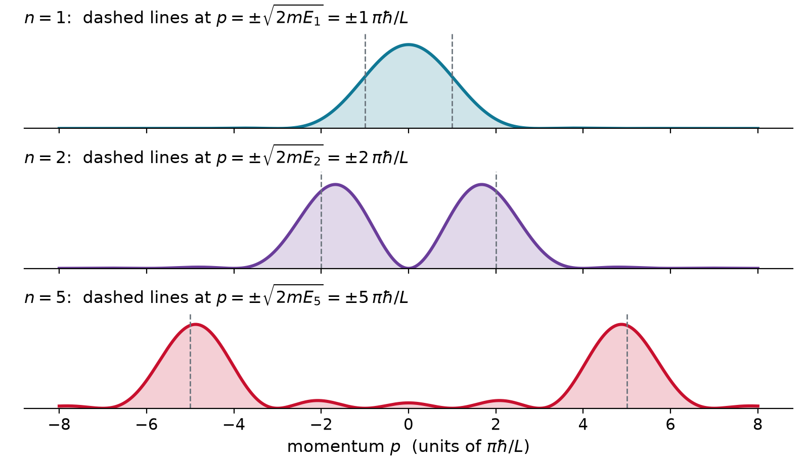
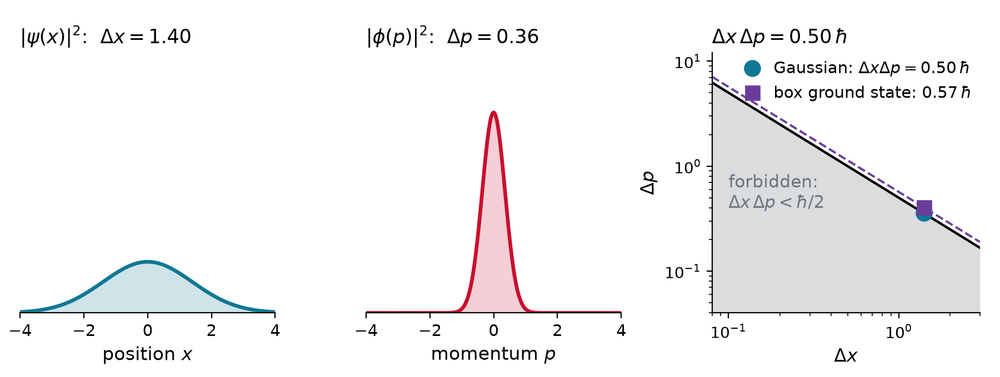

Chem 3240 · Lecture 3.6
Write \mathbf{v} = (3, 4) in the tilted axes \hat{u}_1 = \tfrac{1}{\sqrt{2}}(1, 1) and \hat{u}_2 = \tfrac{1}{\sqrt{2}}(1, -1).
Each component is a projection (a dot product):
c_1 = \hat{u}_1\cdot\mathbf{v} = \tfrac{3 + 4}{\sqrt{2}} = \tfrac{7}{\sqrt{2}}, \qquad c_2 = \hat{u}_2\cdot\mathbf{v} = \tfrac{3 - 4}{\sqrt{2}} = -\tfrac{1}{\sqrt{2}}
\mathbf{v} = c_1\hat{u}_1 + c_2\hat{u}_2, \qquad c_1^2 + c_2^2 = \tfrac{49 + 1}{2} = 25 = \lvert\mathbf{v}\rvert^2

\psi = \sum_n c_n\,\phi_n, \qquad c_n = \langle \phi_n \vert \psi \rangle = \int \phi_n^*\,\psi\,dx
All three use only orthonormality, \langle \phi_m \vert \phi_n \rangle = \delta_{mn}:
\begin{aligned} \text{coefficient:}\quad & \langle \phi_m \vert \psi \rangle = \sum_n c_n\,\langle \phi_m \vert \phi_n \rangle = c_m \\[6pt] \text{normalization:}\quad & \langle \psi \vert \psi \rangle = \sum_m\sum_n c_m^*\,c_n\,\delta_{mn} = \sum_n \lvert c_n\rvert^2 = 1 \\[6pt] \text{average:}\quad & \langle \psi \vert \hat{A} \vert \psi \rangle = \sum_m\sum_n c_m^*\,c_n\,a_n\,\delta_{mn} = \sum_n \lvert c_n\rvert^2\,a_n \end{aligned}
Expand \psi = \sqrt{30/L^5}\;x(L-x) in box states \psi_n = \sqrt{2/L}\,\sin(n\pi x/L).
Two integrations by parts:
c_n = \int_0^L \psi_n\,\psi\,dx = \frac{8\sqrt{15}}{(n\pi)^3}\ \ (n \text{ odd}), \qquad c_n = 0\ \ (n \text{ even: odd about } L/2)
\lvert c_1\rvert^2 = \frac{960}{\pi^6} = 0.9986, \qquad \lvert c_3\rvert^2 = 0.0014, \qquad \lvert c_5\rvert^2 = 0.0001


\text{reading } a_n \text{ with probability}\quad p_n = \lvert c_n\rvert^2 = \lvert\langle \phi_n \vert \psi \rangle\rvert^2
\langle A \rangle = \sum_n p_n\,a_n = \langle \psi \vert \hat{A} \vert \psi \rangle
\sigma_A^2 = \sum_n p_n\,\big(a_n - \langle A \rangle\big)^2 = \langle A^2 \rangle - \langle A \rangle^2
\psi = \tfrac{1}{2}\psi_1 + \tfrac{1}{2}\psi_2 + \tfrac{1}{\sqrt{2}}\psi_3 in a box. What can an energy measurement give, how often, and what are \langle E\rangle and \sigma_E?
E_1,\ 4E_1,\ 9E_1 \quad\text{with}\quad p = \tfrac{1}{4},\ \tfrac{1}{4},\ \tfrac{1}{2}
\langle E \rangle = \tfrac{1}{4}(1) + \tfrac{1}{4}(4) + \tfrac{1}{2}(9) = 5.75\,E_1
\langle E^2 \rangle = \tfrac{1}{4}(1) + \tfrac{1}{4}(16) + \tfrac{1}{2}(81) = 44.75\,E_1^2
\sigma_E = \sqrt{44.75 - 5.75^2}\;E_1 = 3.42\,E_1



\sigma_A\,\sigma_B \geq \tfrac{1}{2}\big\lvert\langle[\hat{A},\hat{B}]\rangle\big\rvert \qquad\Longrightarrow\qquad \sigma_x\,\sigma_p \geq \hbar/2
For \psi_1 = \sqrt{2/L}\,\sin(\pi x/L), find \sigma_x, \sigma_p and their product.
\langle x\rangle = \tfrac{L}{2}, \quad \langle x^2\rangle = L^2\left(\tfrac{1}{3} - \tfrac{1}{2\pi^2}\right) \;\Rightarrow\; \sigma_x = 0.181\,L
\langle p\rangle = 0, \quad \langle p^2\rangle = 2mE_1 = \left(\tfrac{\pi\hbar}{L}\right)^2 \;\Rightarrow\; \sigma_p = \tfrac{\pi\hbar}{L}
\sigma_x\,\sigma_p = 0.181\,\pi\,\hbar = 0.568\,\hbar \;\geq\; 0.5\,\hbar
Expand the state in the eigenfunctions of the observable: the coefficients are projections, c_n = \langle \phi_n \vert \psi \rangle. A measurement returns one eigenvalue a_n, with probability \lvert c_n\rvert^2, and leaves the system in \phi_n. Averages are weighted sums, \langle A\rangle = \sum_n \lvert c_n\rvert^2 a_n, sharp only in eigenstates; and observables that do not commute cannot be sharp together, \sigma_x\sigma_p \geq \hbar/2.
Chem 3240 · Quantum Mechanics